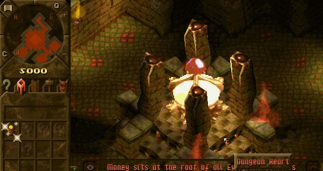
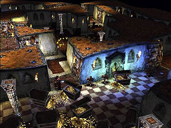

Vilain Game Designer ! Pas de biscuit pour toi ! IV
L'article original est écrit par Ernest Adams publié par Gamasutra (mars 2005).
L'auteur original n'est en aucun cas reponsable de la précision de cette traduction.
Je n’écrirai pas l’article de ce mois-ci. Vous allez le faire. Ou plutôt, vous l’avez déjà fait. Quelques années après l’article « Vilain Game Designer ! Pas de biscuit pour toi ! », j’avais demandé aux lecteurs de m’écrire au sujet de ce qui les irritait dans les jeux, et hiiiiiiiii ! qu’est-ce que j’ai reçu comme lettres ! Voici donc une liste des erreurs de conception et des causes d’énervement envoyées par de nombreux lecteurs. J’essayerai de rendre à César ce qui est à César quand je le peux, mais certains n’utilisent pas leur vrai nom et je ne peux dans ce cas malheureusement rien faire.

Les méchants avec des armes qui s’envolent.
Beaucoup de gens ont écrit pour se plaindre au sujet de celui-ci. C’est le corollaire du « Les oiseaux qui transportent des épées » du dernier article « Vilain Game Designer ! Pas de biscuit pour toi ! ». Vous passez une éternité à abattre un quelconque méchant important de l’histoire et quand vous y arrivez finalement, son arme à disparu. Evan McClanahan disait : « si j’arrive à passer discrètement derrière quelqu’un et à le poignarder dans le dos avec l’un de mes personnages puisqu’il immobilise le reste de mon équipe avec son Inépuisable Mitrailleuse de Perforation (+2), je m’attends à pouvoir la récupérer, et non pas un cadavre sans rien, si ce n’est trois unités de monnaie du futur et un chewing-gum. »
Ceci est compréhensible dans les jeux online, dans une certaine mesure. Les monstres réapparaissent en permanence et s’ils laissaient une grosse arme chaque fois qu’ils mourraient, l’univers serait bientôt envahi par de telles armes. Mais dans les jeux à un seul joueur, vous avez la possibilité d’équilibrer le jeu correctement, et vous pouvez compenser en conséquence pour éviter ce genre de problème. Si cela déséquilibre trop le jeu, vous pouvez limiter la capacité du joueur à utiliser cette arme – Ok, vous avez tué le troll et récupéré sa masse, mais en fait, vous ne pouvez pas manier ce tronc d’arbre de trente kilos si facilement. Ou peut-être que vous avez obtenu l’incroyable gun du grand méchant, mais les seules munitions disponibles sont celles qu’il avait sur lui à ce moment. Si vous insistez pour vous trimballer cette chose partout dans l’espoir de trouver plus de munitions, libre à vous.
Un autre corollaire de ceci, envoyé par Chris Oates, est la démone dans un micro-bikini de cuir qui laisse derrière elle un set d’armure complet quand elle meurt. Quoi, elle avait ça sur elle mais ne se sentait pas de la mettre pour le combat ? Il y avait besoin de l’envoyer chez le teinturier ou quoi ?
J’ai joué à des jeux qui ont réussi ce point. Vous tuez un petit kobold, vous obtenez un petit couteau. Vous tuez cinquante petits kobolds, vous obtenez cinquante petits couteaux, dont aucun n’a vraiment de valeur, donc vous les laissez là où vous les avez trouvés, comme vous le feriez dans le monde réel.
Impossible de jouer au jeu avec différents niveaux de difficulté
Celui-ci est un peu délicat, parce que je sais ce que cela coûte à implémenter. Equilibrer un jeu pour des niveaux d’expériences différents prend plus de temps que de l’équilibrer pour un seul type de joueur, et dans le développement d’un jeu, le temps, c’est de l’argent. Néanmoins, tous les joueurs n’ont pas le même niveau et tous ne cherchent pas des challenges de la même difficulté (créer des jeux épouvantablement difficiles juste parce que vous le pouvez est un signe d’auto-indulgence, chez le designer, comme j’en parlais dans un précédent article, « Quel type de designer êtes-vous ? »). En donnant aux joueurs différents niveaux de jeu, vous augmenter la durée de vie du jeu, parce que les joueurs peuvent le finir et y rejouer de nouveau. Plus important, vous agrandissez le marché. Si le jeu est trop facile, il aura une très mauvaise réputation auprès des hardcore gamers. S’il est trop dur, c’est chez les casual gamers qu’il aurait mauvaise réputation. Si vous offrez au joueur la possibilité de jouer avec différents niveaux de difficulté, vous pouvez attirer ces deux catégories de joueurs.
Obscurité excessive
Trent Lucier a écrit pour se plaindre des jeux auxquels vous devez jouer volets fermés et la luminosité au maximum de façon à y voir quelque chose. Ok, pour les cinq premières minutes, c’est très effrayant et ça donne une atmosphère, mais après ça, c’est simplement pénible. Et comment se fait-il que tous les méchants peuvent voir dans le noir bien mieux que moi ? Je suis complètement d’accord avec ceci – je n’ai rien contre le côté « trouble », mais je ne m’amuse pas beaucoup avec le côté « sombre ». Scruter comme une taupe et rentrer dans les objets tout le temps ne rentre pas dans le cadre de ma vision d’un voleur/assassin/ninja furtif et cool. Le truc avec les assassins furtifs, c’est qu’ils voient très bien quand il fait sombre.
Charlie Byers pointe aussi du doigt le problème avec de nombreux portages de jeux PC sur Mac : les écrans Macintosh n’ont pas le même gammut de couleurs et d’après lui, la correction fournie avec l’Unreal Engine ne fonctionne pas correctement sur les Mac. Programmeurs, prenez en note !
Menus bâclés
De nombreuses personnes se plaignent au sujet des interfaces minables dans « l’enveloppe » du jeu – les menus de configuration par lesquels on doit passer avant de pouvoir jouer. Ceux-ci ne sont jamais très intéressants à concevoir ; ce sont juste des écrans de configuration, de sauvegarde et de chargement, etc. En conséquence, ils tendent à souffrir de l’un de ces deux problèmes : soit ils sont faits à la va-vite, avec un mauvais rendu et une organisation bizarre, soit ils sont beaucoup plus enluminés que nécessaire. Afin de dissimuler le fait qu’il s’agit juste de fonctions basiques et de mieux les faire coller au thème du jeu, tous les menus sont faits en lettres de feu tournoyantes, avec des effets de particules sur le nom sur lequel vous avez laissé le curseur.
La meilleure façon de réussir « l’enveloppe » du jeu du point de vue du joueur n’est pas de la rafistoler à grand coup d’effets sans intérêt, mais de lui donner un design efficace et la rendre simple d’utilisation, de façon à ce que le joueur puisse joueur aussi rapidement que possible. Créez une police qui soit en adéquation avec le thème du jeu par tous les moyens, mais assurez vous qu’elle soit très lisible aussi. Essayez de ne pas avoir de menus avec plus de deux sous-menus à l’intérieur. Arrangez vous pour avoir des paramètres par défaut raisonnables, de façon à ce que le joueur puisse jouer tout de suite la première fois qu’il joue (étant donné la diversité des PC, je sais que cela peut être délicat.). La première page du manuel des vieux compilateurs Borland Turbo Pascal – avant même le titre – était intitulée « Comment commencer immédiatement », parce qu’ils savaient que tout le monde voulait y plonger la tête la première. C’est encore plus vrai pour les joueurs.
N’oubliez pas : si l’enveloppe est la partie la moins intéressante d’un jeu, c’est aussi la première chose que le joueur verra, avant d’entrer véritablement dans le jeu. Comme ils disent dans les guides pour réussir un entretien d’embauche, vous n’avez qu’une seule chance de faire une bonne première impression.
Rencontres aléatoires qui font perdre du temps
Alors vous avez entièrement nettoyé la ville de Patauge-les-Marais des affreux rats qui rendaient la vie triste, gagné quelques points d’expérience, et maintenant vous êtes parti pour accomplir de nouveau hauts-faits ailleurs. Mais, bien sûr, vous devez retourner à Patauge-les-Marais régulièrement pour vendre le fruit de vos rapines et renouveler votre stock de Carreaux d’Arbalète Extra-Pointus +3. Le problème est que, chaque fois que vous revenez, vous vous faîtes de nouveau attaquer par des rats lors de rencontres aléatoires. A ce moment, vous avez la force de massacrer des furets ou même de jeunes blaireaux, et c’est donc une complète perte de temps. Plutôt que de combattre les rats pour les quelques misérables points d’expérience qu’ils rapportent, vous vous retrouvez à les fuir, juste pour éviter le problème !
Une variante de cette nuisance est quand vous revenez à Patauge-les-Marais juste pour découvrir que la ville a été mystérieusement repeuplée par les rats, qui sont simplement cinq fois plus forts qu’avant, et que tout est à refaire. Ils ont la même apparence et le même comportement que la dernière fournée de rats, il n’y a donc rien de nouveau au niveau du gameplay, juste un challenge vide de sens.
Ca, ça veut clairement dire pas de biscuit. Un instant de réflexion va nous montrer quelle est la bonne approche. D’une part, toute région qui a été nettoyée de la présence d’une espèce de créature doit rester nettoyée pendant un certain temps (c’est un principe écologique de base autant qu’un bon principe de game design). D’autre part, les rencontres aléatoires avec des créatures trop faibles pour représenter une menace devrait faire fuir de terreur les dites créatures (c’est un comportement animal de base). De cette façon, vous ne gaspillez pas le temps du joueur avec des combats sans intérêt (NdT : Persona 4 et Persona 3 implémentent ceci de façon remarquable).
Impossibilité de sauvegarder après avoir soigneusement réglé son équipement
Les lecteurs assidus de mes articles sauront déjà où je me positionne dans le débat sur la sauvegarde : je pense que les joueurs devraient pouvoir le faire quand ils le désirent et s’il rechargent tout le temps pour réussir un passage difficile, c’est leur droit. Néanmoins, je suis prêt à accepter qu’il y ait d’autres points de vue sur le sujet.
Mais c’est vraiment très énervant, comme le fait remarquer Brendan Sechter, quand le jeu requiert un réglage soigneux d’unités/d’armes/de quoi que ce soit d’autre au début d’un niveau de façon à faire face aux challenges qui attendent le joueur, mais ne vous donne pas la possibilité de sauvegarder ces réglages. Régler les forces à disposition peut être un élément très intéressant du gameplay, mais pas quand vous devez le refaire de façon répétée chaque fois que vous recommencez le niveau – après un moment, il s’agit juste de par cœur ennuyeux.
Contrôle de la caméra lamentable (ou inexistant)
Dave Wilson a porté à mon attention le fait que certains jeux 3D à la troisième personne ne donnent au joueur aucun contrôle sur la caméra. Vilain game designer ! C’est pour cela que les environnement 3D sont faits : cela ne coûte rien, que dalle, nada de laisser une liberté de perspective. Regardez : le champ de vision normal pour un être humain est large d’environ 120 degrés. Le champ de vision varie considérablement selon les jeux et a tendance à devenir de plus en plus large dans la mesure où les télévisions HD deviennent monnaie courante, mais on est très loin des 120 degrés dans tous les cas. Pour compenser ceci, le joueur a besoin d’un contrôle décent sur la caméra. Ceci peut être bien fait. Jetez un œil à Spyro the Dragon ou à Toy Story 2 sur Playstation et vous verrez d’excellents exemples de caméras fluides, intuitives et contrôlées par le joueur.
Les créatures qui peuvent redonner vie aux cadavres

J’ai vu ceci dans plusieurs jeux et cela donne l’impression d’être un prolongement fun et naturel du gameplay d’un jeu type fantasy. Le sombre nécromant a le pouvoir de ressusciter les corps de ses ennemis morts et de les faire combattre à ses côtés en tant que zombies ou autre. Riche idée… ou du moins ça en donne l’impression. Hélas, si cet aspect n’est pas correctement pris en main, cela peut déséquilibrer de façon radicale le jeu, parce que cela crée une rétroaction positive hors de contrôle : plus vous perdez d’unités, plus l’ennemi en gagne. Comme je l’ai dit ailleurs, imaginez ce qui se passerait si aux échecs, vous capturiez les pièces de l’ennemi pour les utiliser comme les vôtres. Le jeu serait bien plus court. Tout mécanisme qui permet à l’un des camps de récupérer les unités adverses nécessite un très grand soin dans la façon de l’équilibrer.
Dungeon Keeper avait en fait pas moins de quatre mécanismes pour transformer des créatures ennemies en « alliés », et elles étaient toutes équilibrées de façon différente.
- Vous pouviez capturer les unités ennemies, les mettre en prison et les laisser mourir de faim (d’un certain point de vue, Dungeon Keeper ferait passer Grand Theft Auto pour un modèle de dignité humaine, mais nous ne nous lancerons pas dans ce débat pour l’instant). Dans ce cas, ils se transformaient en squelette de bas niveau, de piètres guerriers dans le meilleur des cas. Ceci prenait aussi un bon moment. Entre le temps nécessaire et la diminution de la force, ce n’était pas une technique qui déséquilibrait fortement le jeu.
- Vous pouviez capturer des créatures ennemies et les faire torturer dans vos chambres de torture (oui, oui, je sais), ce qui amenait la plupart d’entre eux à changer de camp. Dans ce cas, la créature restait aussi forte pour vous qu’elle l’était pour l’ennemi. L’inconvénient était que cela prenait un très long moment et que vous deviez constamment invoquer de coûteux sorts de soin afin que la créature ne meure pas sous la torture. De plus, plus la créature était forte, plus ce processus était long, ce qui naturellement tendait à en contrebalancer le bénéfice.
- Vous pouviez traîner les cadavres de vos ennemis jusqu’à un cimetière et quand suffisamment de corps y avaient été enterrés, le cimetière produisait un vampire. Les facteurs d’équilibre était que cette méthode nécessitait plusieurs cadavres (huit, si je me souviens bien) pour produire un seul vampire, et le cimetière était particulièrement cher à construire. D’un autre côté, les vampires faisaient partie des créatures les plus puissantes du jeu une fois entraînés, ce qui en faisait une technique très efficace.
- Le Dungeon Keeper original proposait une pièce spéciale appelée salle des charognards, dans laquelle vos créatures persuadaient vos adversaires de changer de camp – une sorte de lieu de recrutement pour traîtres. La contrepartie était que la salle des charognards était extrêmement chère, comme le cimetière, et pendant que vos créatures y travaillaient, elles n’étaient pas disponibles pour l’entraînement ou le combat. De plus, l’adversaire pouvait aussi avoir sa propre salle des charognards. Néanmoins, cette fonctionnalité déséquilibrait trop le jeu – en mode deux joueurs, le premier à avoir réussi à construire une salle des charognards gagnait presque automatiquement – et fut donc éliminé dans Dungeon Keeper 2.
Pour faire court, Dungeon Keeper est un exemple de jeu qui a réussi sur ce point et dont on peut beaucoup apprendre.
L’autre problème avec la résurrection des cadavres est que, souvent, l’unité qui ressuscite est très puissante : un puissant mage ou quelque chose dans ce goût-là. En conséquence, n’importe quel groupe avec celui est quasiment invincible. Si vous comptez donner à une unité particulière le pouvoir de procéder à de telles résurrections, pensez à la rendre assez faible et vulnérable pour compenser.
Conclusion
J’ai encore beaucoup de conditions pour refuser un biscuit à un game designer que je n’avais pas la place de mettre ici… Je crois que je vais m’en servir pour constituer une base de données ! Mais je suis toujours intéressé par de nouveaux cas. Ecrivez moi (NdT : en anglais) à notwinkie@designersnotebook.com au sujet des erreurs de game design qui vous ont vraiment fait enrager (regardez les précédents articles, au cas où celles-ci seraient déjà mentionnées).
Ajouter un commentaire
Commentaires

Excellent article !
Je prends en note, c'est un article très instructif, merci beaucoup !
--Deimz

Merci pour le biscuit :P
Pour ce qui est de jouer sur l'aveuglement des personnages, l'idée m'évoque Shadow of the Colossus (Playstation 2) dans lequel on est effectivement aveuglé par la lumière lorsque l'on quitte un endroit fermé ou un canyon ombragé pour regagner une étendue ouverte et ensoleillée. Je n'ai cependant jamais vu le procédé utilisé dans un jeu d'action ou d'infiltration (mais c'est pas comme si j'étais à jour sur tout ce qui sort non plus).
D'abord, félicitations pour cet excellent site que je prends un grand plaisir à lire à chaque fois. Félicitations aussi pour l'inscription qui pour une fois ne réclame pas d'adresse mail inutile. Un biscuit, donc, pour le web designer
A propos de l'obscurité, c'est quelque chose qui m'a moi aussi toujours irrité, mais votre réflexion sur "l'assassin furtif" m'a fait penser à un système qui devrait fonctionner, tout au moins en vue à la première personne. Dans la réalité, lorsque l'on passe de la lumière à l'obscurité et inversement, la vue met un certain temps à s'adapter: quelques secondes pour distinguer les objets, quelques minutes pour être en pleine possession de ses capacités. De plus, les flashs dans l'obscurité sont très néfastes à la vision. Je trouverais très sympa de retrouver ces principes dans un jeu, cela ferait un peu de gameplay supplémentaire: attirer ses ennemis dans la lumière pour les aveugler ou tout au moins ne pas se retrouver soi-même diminué, et inversement, les attirer dans l'ombre pour profiter de leur temps d'adaptation, et enfin privilégier les armes discrètes lorsque l'on se trouve dans l'obscurité pour ne pas s'aveugler soi-même. Remarquez cela fait un certain temps que je ne joue plus beaucoup aux jeux vidéo, alors peut-être que je suis en train de décrire quelque chose qui existe déjà…
--Ono
J'ai bien rit mais c'était très instructif :)
--Walina